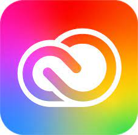
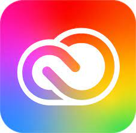

My Recent Projects
These are a couple of projects I've completed through school & extracurriculars that I had fun with!

UM Sports Performance and Nutrition
My goal for this project was two-fold. I wanted to compare bone strength in the athletes of aquatic sports and athletes of land-based sports and to pinpoint solutions for weak bones so athletes can avoid bone related injuries in the future.
If you're interested in more details, here is my poster presentation including my methods, analysis, and findings.
Gale Publishing Co.
This was a fun consulting project I worked on through REACH Consulting Group. I was responsible for providing recommendations on how Gale Publishing Co. could optimize their subscription renewal process based on their customer demographics data.
Blue Cross Blue Shield of Michigan
I interned this previous summer as an Operations and Performance Management Intern. A few of my responsibilities included:
- Updating the front and back-end of a BCBSM website through HTML&CSS and JavaScript
- Writing and deploying SQL queries and stored procedures to clean large datasets
- Creating technical documentation for existing ETL packages

EPL Analysis
I enjoy watching soccer, particularly the English Premier League. For this project, I wanted to analyze:
- How different variables can impact match outcomes
- Performance statistics of certain positions
- The probability of a team winning based on the half-time score
Most commonly for these types of technical projects, I utilize:


 
